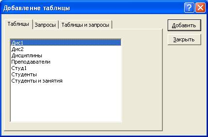
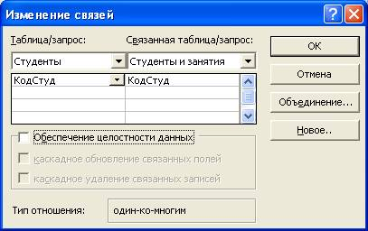
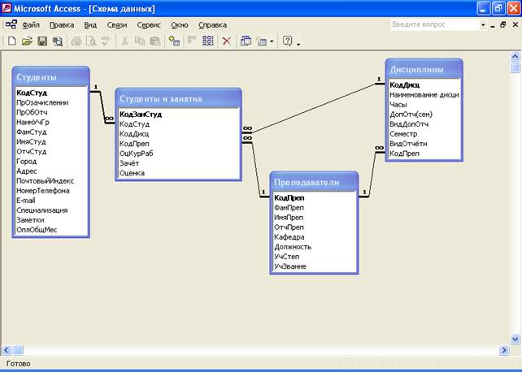

Лабораторная работа № 2: Проектирование структуры БД в среде MS Access
Цель
занятия: изучить условия, необходимые
для создания взаимосвязанных таблиц и приемы их создания. Познакомиться с основными
типами связей, образующихся между таблицами и научиться редактировать параметры
связи.
Задание:
1.
Создать БД,
позволяющую хранить следующую информацию о студентах учебного заведения и их
успеваемости:
· фамилия, имя, отчество студента;
· адрес (почтовый индекс, адрес) и номер телефона
студента;
· номера и даты приказов по учебному заведению о
зачислении и об отчислении;
· сведения о специализации;
· наименование дисциплин, изучаемых студентом в каждом
семестре;
· количество часов, отводимое учебным планом на каждую
дисциплину;
· виды дополнительной отчётности по каждой дисциплине
(домашнее задание, расчётно-графическая работа, контрольная работа, курсовая
работа);
· виды отчётности по каждой дисциплине (зачёт, зачёт с
оценкой, экзамен);
· результаты сдачи зачётов и экзаменов по семестрам;
· сведения о преподавателях, преподающих каждую из
дисциплин: фамилия, имя, отчество, наименование кафедры, должность, учёная
степень и звание.
2.
Создаваемая база
данных должна удовлетворять следующим требованиям:
· обеспечивать необходимую оперативность доступа к
необходимой информации;
· обеспечивать полноту и достоверность хранимой
информации;
· иметь минимальный объём;
· не иметь повторяющихся данных большого объёма в полях;
· иметь простую логическую структуру;
· допускать возможность расширения числа полей данных в
каждой таблице без существенного изменения обще структуры БД;
· обеспечить удобство анализа хранимой информации;
· иметь возможность создания типовых документов,
используемых в учебном процессе ВУЗа (списки учебных групп, зачётные и
экзаменационные ведомости, сводные ведомости успеваемости учебной группы и
каждого студента за семестр и весь период обучения, приложение к диплому для
каждого выпускника и пр.).
3.
Дополнительные
требования к создаваемой БД (должны быть учтены в ходе выполнения последующих
лабораторных работ):
·
в случаях
заполнения полей кодами данных необходимо обеспечить пользователя БД
контекстной помощью по истинным значениям информационных полей, связанных с
указанными кодовыми обозначениями;
·
при вводе данных,
имеющих конечное число значений, иметь возможность не только прямого ввода
данных в ячейку, но и выбора указанных значений из всплывающего контекстного
меню (поля со списком);
·
при необходимости
принять меры к исключению ввода данных, не вошедших в перечень, разрешённый для
ввода;
·
в необходимых
случаях обеспечить контроль правильности вводимых данных путём использования
типовых масок ввода и их модификаций (например, для обеспечения правильности
ввода номера и даты приказа по ВУЗу о зачислении студента).
Порядок выполнения: на основе лекционного материала и контекстной помощи
MS Access выполнить
и описать порядок выполнения следующих пунктов задания:
1.
Разработать
проект новой БД: названия, общее назначение таблиц создаваемой БД и названия
полей таблиц БД, предназначенной для выполнения п.2 вышеуказанных требований к
БД.
2.
Представить в
виде схемы данных (в рабочей тетради) характер взаимосвязи полей таблиц,
созданных в ходе выполнения п.1.
3.
Запустить
программу Мicrosoft Access (Пуск ® Программы ®Microsoft Access).
4.
Создать таблицы
новой БД в соответствии с проектом, разработанным в ходе выполнения пп.1, 2.
5.
Создать в каждой
из таблиц по 5-10 записей учебного характера (вымышленные фамилии, адреса,
наименования дисциплин и пр.).
6.
На панели
инструментов выбрать кнопку Схема данных (или выбрать в меню
команды Сервис®Схема данных). Одновременно с открытием этого окна открывается
диалоговое окно Добавление таблицы (рис. 31.1), на вкладке Таблицы которого можно
выбрать таблицы, между которыми создаются связи.

Рис. 31.1
1.
Установить связи
между таблицами в соответствии с проектом (установка связи между полями таблиц,
помещенных в схему данных проще всего может быть осуществлена путем перетаскивания
поля главной таблицы к выбранному полю зависимой таблицы с помощью левой кнопки
мыши). При отпускании кнопки мыши автоматически откроется диалоговое окно Изменение
связей (рис. 31.2).

Рис. 31.2
2.
Закройте
диалоговое окно Изменение связей и в окне Схема данных рассмотрите
образовавшуюся связь. Убедитесь в том, что линию связи можно выделить щелчком
левой кнопки мыши, а щелчком правой кнопки мыши открывается контекстное меню,
позволяющее разорвать связь или отредактировать ее (рис. 31.3).
3.
Закройте окно
Схема данных. Закройте программу Microsoft Access.
Пример схемы
данных

Рис. 31.3
Примечание: жирным шрифтом выделены поля главных таблиц, а
обычным шрифтом – поля связанных таблиц.